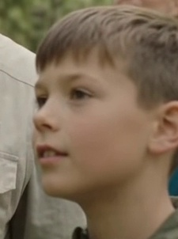
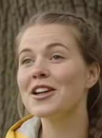

Tips: Klikk på et ansiktskort til høyre for å hoppe direkte til tidspunktet!
Kryss-video Forekomstmatrise
Tabellen viser hvilke videoer hver enkelt person opptrer i, totalt antall ansikter, og tidsintervall.
| Identitet | Type | Video: gemini_generated_video_2205156f | Video: gemini_generated_video_662b64d0 | Video: gemini_generated_video_ab8243d5 | Totalt Antall | Handling |
|---|---|---|---|---|---|---|
|
person_000
|
KRYSS-VIDEO | 13x (00:00.625) | 12x (00:00.625) | 6x (00:00.625) | 31 ansikter | |
|
person_001
|
KRYSS-VIDEO | 3x (00:00.625) | - | 3x (00:00.625) | 6 ansikter | |
|
person_002
|
KRYSS-VIDEO | 5x (00:02.500) | 5x (00:02.500) | 5x (00:02.500) | 15 ansikter | |
|
person_003
|
KRYSS-VIDEO | 17x (00:04.167) | 17x (00:04.167) | 7x (00:04.167) | 41 ansikter | |
|
 person_004 |
KRYSS-VIDEO | 17x (00:04.167) | 12x (00:04.583) | 6x (00:04.167) | 35 ansikter | |
|
person_005
|
KRYSS-VIDEO | 14x (00:06.042) | 22x (00:06.042) | 5x (00:06.042) | 41 ansikter | |
|
 person_006 |
KRYSS-VIDEO | 7x (00:13.125) | 7x (00:13.125) | - | 14 ansikter | |
|
person_007
|
Enkeltvideo | 22x (00:16.042) | - | - | 22 ansikter | |
|
person_008
|
Enkeltvideo | - | 6x (00:21.875) | - | 6 ansikter | |
|
person_009
|
Enkeltvideo | - | 7x (00:23.125) | - | 7 ansikter | |
|
person_010
|
Enkeltvideo | - | 8x (00:25.833) | - | 8 ansikter | |
|
person_011
|
Enkeltvideo | - | 8x (00:25.833) | - | 8 ansikter |